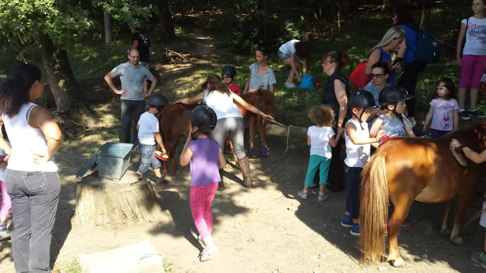

Regala Esperienze Uniche
Questo Natale, regala un'esperienza indimenticabile con Maestra Cavallerizza. Scegli tra il nostro corso "Cavalcando Emozioni" e le emozionanti passeggiate a cavallo - entrambe da vivere con l'arrivo della bella stagione nel 2025!
Nota sulle Attività
Le attività riprenderanno con l'arrivo della bella stagione nel 2025. Acquistando ora, regalerai un voucher da utilizzare nel nuovo anno!
Cavalcando Emozioni
Regala "Cavalcando Emozioni", un'esperienza trasformativa che rafforza il legame tra genitori e figli attraverso l'interazione con i cavalli da terra. Un regalo che continuerà a dare i suoi frutti nel tempo, creando ricordi indimenticabili e momenti di vera connessione.
Cosa Include questo Regalo:
- Quattro Incontri Speciali: Sessioni domenicali di due ore ciascuna, da vivere nella bella stagione 2025
- Attività di Introspezione: Percorsi guidati per stimolare dialogo e comprensione reciproca
- Interazione con i Cavalli: Esperienze uniche di comunicazione e connessione con questi nobili animali
- Strumenti per la Vita: Tecniche e approcci per migliorare le relazioni quotidiane
La nostra missione è di offrire un'esperienza che vada oltre l'equitazione: siamo convinti che, attraverso il contatto con i cavalli, sia possibile aprire nuovi orizzonti di crescita personale e familiare. Il corso è pensato per tutti, senza necessità di precedenti esperienze equestri, garantendo un ambiente sicuro, inclusivo e profondamente arricchente.
Quando
Il corso si articola in quattro incontri di domenica, dalle 15 alle 17. Le date specifiche verranno concordate successivamente all'acquisto del pacchetto, in base alle disponibilità e alle condizioni meteo.
Come
Il focus del corso è l'interazione con il cavallo da terra, non si tratta di un tradizionale corso di equitazione ma di un'esperienza volta a migliorare la comunicazione e il legame tra genitori e figli attraverso il contatto diretto con gli animali.
Passeggiate a Cavallo
Sorprendi i tuoi cari con il regalo di un'esperienza indimenticabile: una passeggiata a cavallo immersi nella natura. Un dono perfetto per chi ama l'avventura e desidera vivere momenti unici, da godere con l'arrivo della bella stagione nel 2025.
Il Regalo Include:
- Esperienza Completa: 1 ora e mezza di passeggiata guidata da utilizzare nella primavera/estate 2025
- Tessera FISE Inclusa: Il prezzo comprende il tesseramento FISE valido un anno
- Assistenza Esperta: Guide qualificate per garantire sicurezza e divertimento
Le passeggiate a cavallo offrono un modo unico per connettersi con la natura e gli animali, migliorando al contempo equilibrio, coordinazione e fiducia in se stessi. È un'attività perfetta per famiglie, coppie o individui alla ricerca di un'esperienza all'aria aperta memorabile.
Quando
Le date specifiche verranno concordate successivamente all'acquisto del pacchetto, in base alle disponibilità e alle condizioni meteo.
Come
Le passeggiate si svolgono in sella al cavallo, guidati dai nostri esperti istruttori. Prima della partenza, verrà fornita una breve introduzione e istruzioni di base, specialmente per i principianti.
Informazioni Utili
Dove
Sia il corso che le passeggiate si svolgono presso i nostri maneggi partner: Circolo Ippico Valganzole, situato in Via Fornace 3, Sasso Marconi (BO), e il Circolo Ippico Don Chisciotte, situato in Via del Gomito 20/3, Bologna.
Il luogo verrà deciso a seguito della prenotazione, sulla base del luogo più comodo da raggiungere per i partecipanti. Maggiori dettagli su come raggiungerci sono disponibili cliccando sui rispettivi link nella mappa di seguito.
Chi
Tutte le nostre attività sono guidate dalla nostra esperta istruttrice, Simona Anderlini. Con una carriera di oltre 40 anni nel settore equestre, Simona unisce la sua vasta esperienza didattica a una profonda passione per l'equitazione, offrendo un approccio che valorizza empatia e sicurezza. Per saperne di più su Simona e sul suo approccio innovativo all'equitazione, visita la pagina di presentazione.